PART 1 · SEC 1.1
Scope, Normative References & Quantitative RBI Framework
API RP 581 provides quantitative Risk-Based Inspection (RBI) methodologies that build directly upon the fundamental qualitative and semi-quantitative principles established in API RP 580. While API RP 580 defines the mandatory minimum requirements and management framework for an RBI program, API RP 581 delivers the exact mathematical algorithms, generic failure frequencies, physical consequence equations, and Bayesian statistical updating mechanisms required to calculate numerical probabilities and consequences of failure for pressure-containing equipment.
| Clause / Section & Title | Quantitative Methodology & Governing Equations | Key Engineering Inputs, Limits & Assumptions | Inspection Strategy & Mitigation Actions |
|---|---|---|---|
| 1.1 Scope & Applicability | Defines quantitative procedures for calculating Risk (R(t) = Pf(t) × Cf(t)) on pressurized fixed equipment including pressure vessels, piping systems, atmospheric storage tanks (ASTs), heat exchanger tube bundles, and pressure relieving devices (PRDs) in oil refining, petrochemical, and chemical process facilities. | Applicable across pressurized boundaries operating from cryogenic conditions to elevated creep regimes. Excludes structural supports, electrical systems, rotating machinery internals (impellers, shafts), and basic instrumentation, which remain governed by RCM or reliability maintenance programs. | Directs inspection planning to prioritize high-risk equipment items, optimize turnaround inspection scopes, select intrusive vs non-intrusive NDE, and satisfy code compliance (API 510, API 570, API 653, NBIC NB-23). |
| 1.2 Normative References | Integrates directly with API 580 (RBI principles), API 510 (Pressure Vessel Inspection), API 570 (Piping Inspection), API 653 (Tank Inspection), API RP 571 (Damage Mechanisms), API 579-1/ASME FFS-1 (Fitness-for-Service), API RP 941 (Steels for Hydrogen Service), API RP 584 (Integrity Operating Windows), and API Standards 520/521 (PRD sizing and relief systems). | Requires strict synchronization between plant RBI models and API 584 IOW limits; whenever operating process parameters exceed critical established limits, damage factors must be recalculated. | Ensures inspection finding records, measured thicknesses, crack detections, and metallurgy records from API 510/570/653 inspections are seamlessly ingested into the RBI Bayesian update algorithm. |
| 1.3 Operating Philosophy & MOC | Mandates establishing a documented Operating Philosophy that ties equipment design limits, operating envelopes, turnaround cycles, and Management of Change (MOC) procedures to the quantitative RBI model. | Unplanned feedstock variations, debottlenecking, catalyst changes, sour water pH swings, or amine contamination directly invalidate current damage rate assumptions unless updated through dynamic MOC reviews. | Audit intervals annually or immediately following any significant operational upset or physical equipment modification. |
PART 1 · SEC 1.2
Basic Concepts, Definitions & Risk Matrix (5x5)
API RP 581 establishes the formal mathematical definition of Risk as the product of the time-dependent Probability of Failure Pf(t) and the physical or financial Consequence of Failure Cf(t). To bridge quantitative modeling with plant decision-making, API RP 581 defines both a continuous Iso-Risk Cartesian domain and a standardized 5x5 discrete Risk Matrix mapping Probability Categories (1 to 5) against Consequence Categories (A to E).
Figure 1.1 — API RP 581 5x5 Qualitative and Semi-Quantitative Risk Matrix
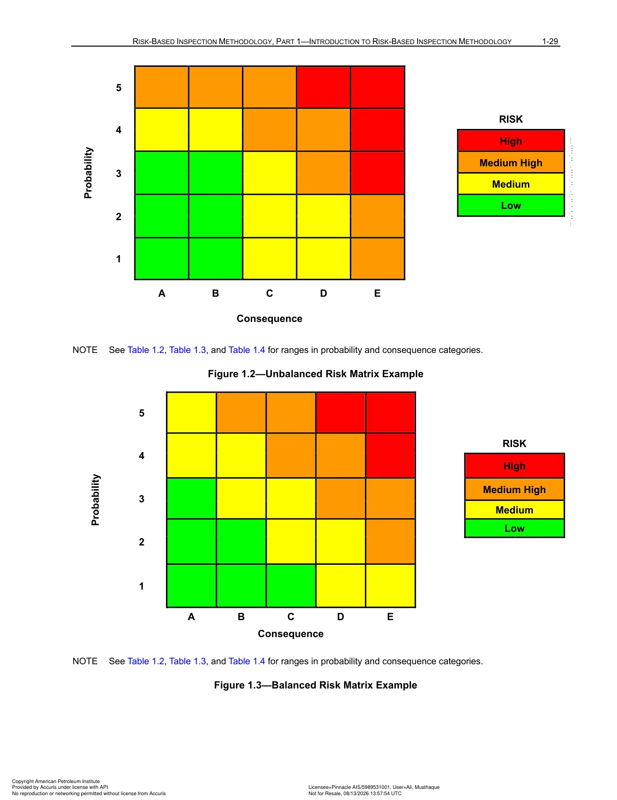
Figure 1.1: The API RP 581 5x5 Risk Matrix plots Probability of Failure (POF Category 1 to 5) against Consequence of Failure (COF Category A to E). The matrix defines four discrete risk rankings: Low (green), Medium (yellow), Medium-High (orange), and High (red). It serves as the primary screening tool for plant-wide risk profiling, unit prioritization, and executive reporting.
Figure 1.2 — Iso-Risk Contours and Cartesian Risk Plotting Domain
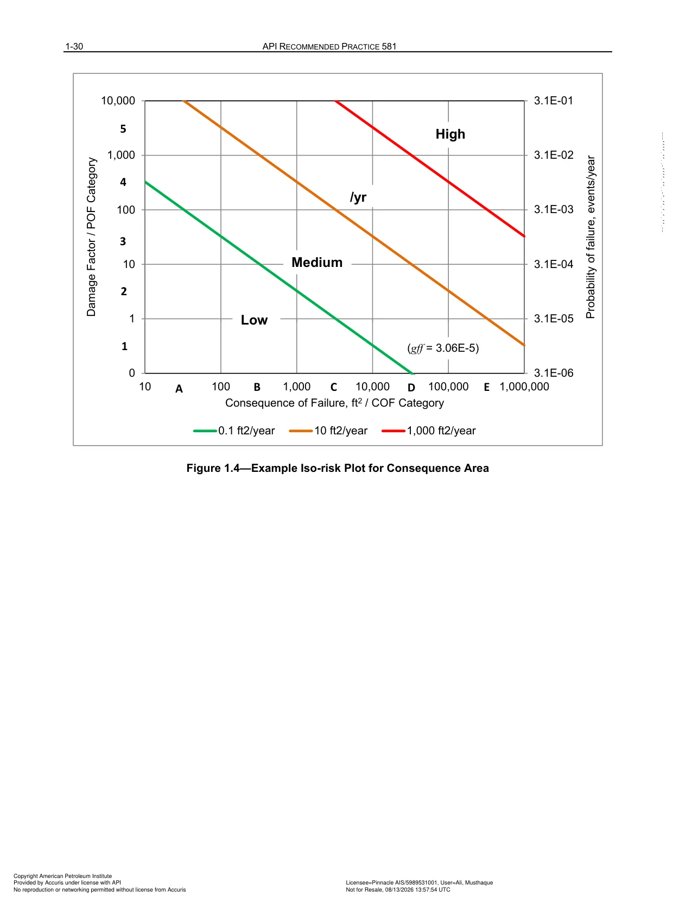
Figure 1.2: Continuous iso-risk contours plotted across quantitative probability and consequence axes. Curves represent lines of constant annual risk (R = Pf × Cf). Assets operating above the organizational target risk curve require mandatory risk mitigation through increased inspection effectiveness or operational derating, while assets well below the curve can adopt optimized, extended inspection intervals.
| Clause / Section & Title | Quantitative Methodology & Governing Equations | Key Engineering Inputs, Limits & Assumptions | Inspection Strategy & Mitigation Actions |
|---|---|---|---|
| 1.4 Probability Categories (1 to 5) | Logarithmic binning of annual failure probability (Pf in failures/year): • Category 1: Pf ≤ 10−5 • Category 2: 10−5 < Pf ≤ 10−4 • Category 3: 10−4 < Pf ≤ 10−3 • Category 4: 10−3 < Pf ≤ 10−2 • Category 5: Pf > 10−2 |
Category assignments reflect accumulated mechanical degradation over time. A component starts at low category and migrates upward as damage factor Df(t) grows. | Components reaching Category 4 or 5 trigger mandatory inspection effectiveness upgrades (Level A or B) or immediate mechanical repairs. |
| 1.5 Consequence Categories (A to E) | Logarithmic binning of flammable/toxic consequence area (CA in ft2 or m2) or financial consequence (USD): • Category A: CA ≤ 100 ft2 (9.29 m2) or ≤ $10,000 • Category B: 100 < CA ≤ 1,000 ft2 (92.9 m2) or $10,000 – $100,000 • Category C: 1,000 < CA ≤ 10,000 ft2 (929 m2) or $100,000 – $1,000,000 • Category D: 10,000 < CA ≤ 100,000 ft2 (9,290 m2) or $1,000,000 – $10,000,000 • Category E: CA > 100,000 ft2 (9,290 m2) or > $10,000,000 |
Consequence is static for a fixed process condition and inventory group, but changes if operating pressure/temperature changes, inventory is isolated, or mitigation barriers are installed. | Focuses highest quality NDE on Category D and E equipment where even low probability failures produce unacceptable plant damage or personnel risk. |
| 1.6 Iso-Risk Contours & Risk Target | Iso-risk lines represent continuous hyperbolic curves in Cartesian space where R(t) = Pf(t) × Cf(t) = Constant. Owner-users define an explicit corporate Target Risk threshold (Rtarget, typically 10−4 failures/yr × consequence area, or financial risk in $/yr). | Equipment operating above the iso-risk target threshold cannot legally or procedurally continue service without mitigation; equipment below can safely operate until the projected Plan Date. | Inspection planning calculates the exact date where the equipment's risk curve crosses the Iso-Risk Target, establishing the hard inspection deadline. |
PART 1 · SEC 1.3
Generic Failure Frequency (GFF) Modeling & Component Release Holes
Generic Failure Frequency (GFF) represents the industry baseline frequency of loss-of-containment events for clean, well-designed, code-compliant equipment in neutral operating service prior to accounting for specific chemical degradation or management systems. API RP 581 tabulates discrete failure frequencies across four standardized release hole sizes for dozens of refining and chemical equipment classifications.
| Clause / Section & Title | Quantitative Methodology & Governing Equations | Key Engineering Inputs, Limits & Assumptions | Inspection Strategy & Mitigation Actions |
|---|---|---|---|
| 1.7 Four Standard Release Hole Sizes | Loss of containment is modeled using four discrete hole diameters: 1. Small: 0.25 in (6.4 mm) — weeping leaks, pinholes, small packing failures. 2. Medium: 1.0 in (25.4 mm) — threaded fitting failures, instrument taps, seal blowouts. 3. Large: 4.0 in (102 mm) — flange leaks, nozzle splits, major localized thinning blowouts. 4. Rupture: Full bore diameter or 16.0 in (406 mm) maximum — catastrophic full-bore guillotine sever or vessel split. |
Sum of generic failure frequencies across all 4 release hole sizes defines total component baseline failure rate: gfftotal = ∑ gffn. | Inspection targets specific degradation morphologies that cause each hole size (e.g. localized pitting causes small leaks, while gross uniform thinning causes catastrophic rupture). |
| 1.8 Baseline Component GFF Values | Benchmark industry failure frequencies per component-year: • Process Piping (≤ 1" NPS): 2.80 × 10−5 / yr • Process Piping (2" to 6" NPS): 8.00 × 10−6 / yr • Process Piping (> 16" NPS): 3.00 × 10−6 / yr • Pressure Vessels (Drums, Towers): 3.06 × 10−5 / yr • Shell & Tube Exchangers (Shell-side): 3.06 × 10−5 / yr • Atmospheric Storage Tanks (Course 1 Shell): 1.02 × 10−4 / yr • Pumps (Centrifugal / Reciprocating): 3.06 × 10−5 / yr |
Small-diameter piping exhibits substantially higher failure frequency than large-diameter piping due to mechanical vibration, lower wall thickness, and higher vulnerability to external damage. | Small bore connections (SBC ≤ 2") require dedicated visual and vibration screening protocols regardless of thinning rates. |
PART 2 · SEC 2.1
POF Architecture, Governing Equations & Damage Factor Combination Logic
Part 2 of API RP 581 defines the quantitative mathematical architecture for determining the time-dependent Probability of Failure Pf(t) for pressurized equipment. The methodology separates failure probability into three independent multiplying components: the industry-baseline Generic Failure Frequency (GFF), the plant-specific Management Systems Factor (FMS), and the dynamic component-specific Total Damage Factor Dftotal(t). This architecture isolates general design vulnerability from process degradation and operational management rigor.
Figure 2.1 — Overview of Probability of Failure (POF) Calculation Using the GFF Method
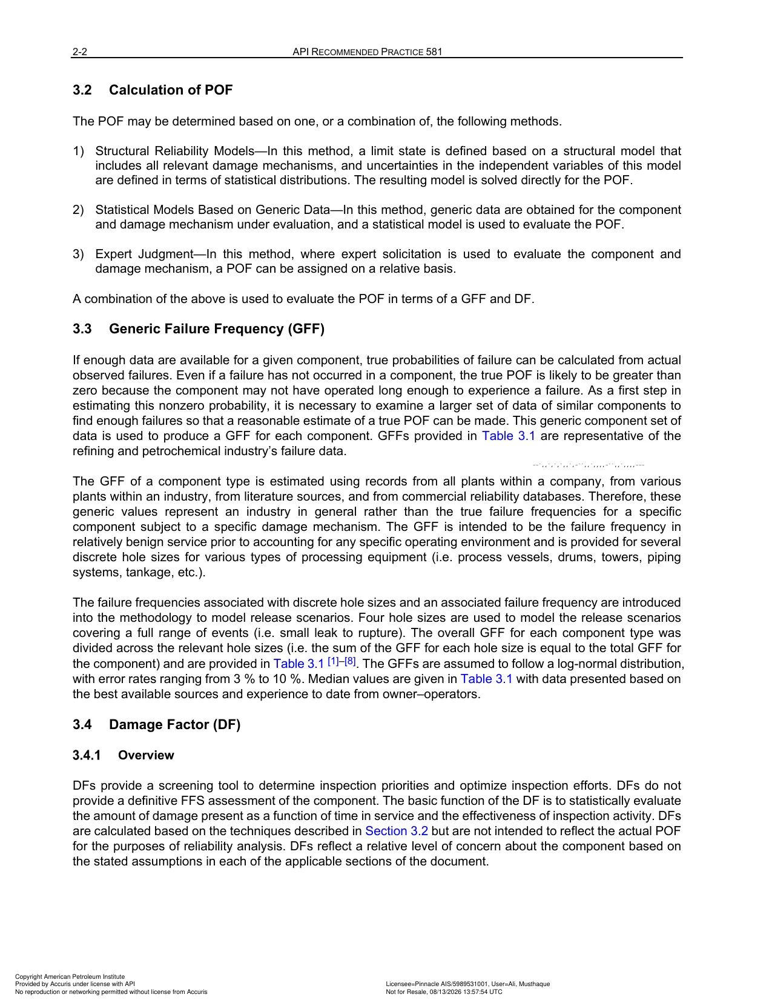
Figure 2.1: Comprehensive logic diagram depicting the tripartite POF formulation: Generic Failure Frequency (GFF) multiplied by the Management Systems Factor (FMS) and the time-dependent Total Damage Factor Dftotal(t). Details how individual damage factors (Thinning, SCC, External/CUI, HTHA, Brittle Fracture, and Fatigue) are evaluated and combined.
| Clause / Section & Title | Quantitative Methodology & Governing Equations | Key Engineering Inputs, Limits & Assumptions | Inspection Strategy & Mitigation Actions |
|---|---|---|---|
| 2.1 Governing Tripartite POF Equation | The foundational quantitative POF equation for any pressurized asset at time t is expressed as: Pf(t) = gfftotal × FMS × Dftotal(t) Where:• gfftotal: Generic Failure Frequency for the specific equipment type (failures/year) • FMS: Management Systems Factor calculated from the Annex 2.A PSM audit score (0.1 ≤ FMS ≤ 10.0) • Dftotal(t): Total Damage Factor representing cumulative mechanical wall loss, cracking, and metallurgical embrittlement (Df ≥ 1.0). |
When a brand-new component is commissioned under average management systems (FMS = 1.0) with zero active degradation (Df = 1.0), its annual failure probability exactly equals its baseline industry GFF. | Inspection does not change GFF or FMS; inspection directly reduces the active Damage Factor Df(t) by updating probability distributions and confirming remaining wall thickness or absence of cracking. |
| 2.2 Damage Factor Combination Algorithm | Because multiple damage mechanisms can act simultaneously or independently, API RP 581 dictates a rigorous summation and maximization combination rule: Dftotal(t) = Dfthin(t) + Dfextd(t) + max[ Dfscc(t), Dfhtha(t), Dfbrit(t), Dffat(t) ] Where:• Dfthin: Internal thinning damage factor • Dfextd: Dfext-cor + Dfcui + Dfext-clscc + Dfcui-clscc (Additive external mechanisms) • SCC, HTHA, Brittle Fracture, and Fatigue are combined via the max operator to prevent artificial mathematical inflation of localized crack-growth probabilities. |
Thinning and external corrosion are additive because both simultaneously reduce structural wall thickness, reducing pressure containment capability additively. | Inspection plans must address all identified active damage mechanisms. A high-effectiveness inspection addressing thinning alone will not reduce total risk if SCC or HTHA damage factors dominate. |
PART 2 · SEC 2.2
Thinning Damage Factor (Dfthin) & Art Parameter Logic
Internal thinning is the most common damage mechanism in refining and petrochemical equipment. API RP 581 calculates the Thinning Damage Factor Dfthin using a Bayesian statistical update framework based on component age, corrosion rate, remaining wall thickness, code minimum thickness, and the quantity and effectiveness of prior non-destructive examinations (Levels A through E).
Figure 2.2 — Thinning Damage Factor (Dfthin) Determination and Inspection Updating Logic
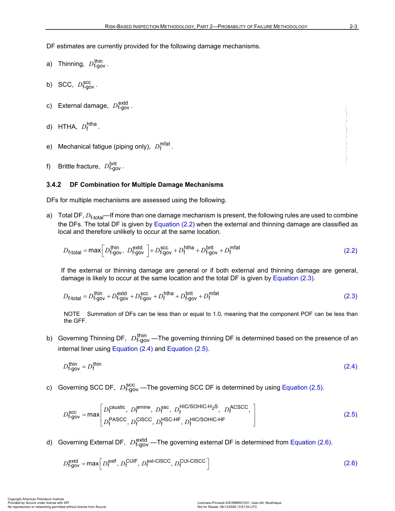
Dfthin) Determination and Inspection Updating Logic" />Figure 2.2: Step-by-step decision tree for determining the thinning damage factor. Incorporates component age, measured or estimated corrosion rate (Cr), starting thickness (trd), required thickness (tmin), and the dimensionless parameter Art. Demonstrates Bayesian updating of the wall-loss probability distribution based on prior inspection history and effectiveness levels (A to E).
| Clause / Section & Title | Quantitative Methodology & Governing Equations | Key Engineering Inputs, Limits & Assumptions | Inspection Strategy & Mitigation Actions |
|---|---|---|---|
| 2.3 The Art Parameter Calculation | The dimensionless thinning parameter Art quantifies the fractional wall loss consumed by corrosion relative to starting thickness: Art = (Cr × age) / trd Where:• Cr: Corrosion rate (in/yr or mm/yr) determined from inspection or Annex 2.B models • age: In-service operating duration since starting thickness measurement (years) • trd: Measured wall thickness from previous inspection or nominal furnished thickness (in or mm). |
As Art approaches 1.0 − (tmin / trd), the component is approaching its pressure design limit, causing Dfthin to escalate exponentially from near 1.0 to several thousand. | Calibrate corrosion rate using ultrasonic thickness scanning (Level A or B) rather than point UT (Level C or D) to prevent excessive statistical uncertainty penalties in the Dfthin calculation. |
| 2.4 Minimum Required Thickness (tmin) & Wall Loss Ratio | The wall loss ratio is defined as tmin / trd, where tmin is the minimum structural wall thickness required for internal/external design pressure, structural weight, and wind/seismic loads per ASME Section VIII Div 1 (UG-27/UG-32) or ASME B31.3 (304.1.2). | If actual measured thickness tactual < tmin, the component has zero structural design margin and Fitness-for-Service evaluation per API 579-1/ASME FFS-1 Part 4 or 5 is immediately required. | Maintain validated tmin calculations in the plant equipment database; overestimating tmin artificially inflates risk, while underestimating it creates unsafe operational blind spots. |
| 2.5 Bayesian Updating & Prior Inspection Credit | API RP 581 uses a Bayesian likelihood function where prior inspection history shifts the probability density function of corrosion rate uncertainty: • Zero inspections: High uncertainty coefficient of variance (COV = 0.50 to 0.75), resulting in large conservative Dfthin values. • One or more Level A or B inspections: Shrinks variance (COV < 0.20), drastically reducing Dfthin for the same measured thickness. |
Higher inspection effectiveness levels yield significantly greater risk reduction credit than multiple low-effectiveness inspections (e.g., 1 Level A inspection provides more credit than 3 Level D visual inspections). | Schedule Level A (full-coverage phased array UT or automated UT grid) when approaching the plan date to reset statistical uncertainty and maximize safe run length. |
PART 2 · SEC 2.3
Annex 2.A — Management Systems Evaluation (FMS) & 13 PSM Categories
Annex 2.A provides an audit workbook to quantitatively assess the quality of a facility's Process Safety Management (PSM) systems. Because management culture, procedure discipline, and maintenance quality directly influence equipment integrity, API RP 581 adjusts baseline failure frequencies across the entire plant via the Management Systems Factor FMS, scaling failure rates by up to a factor of 100 between best-in-class and deficient facilities.
| Clause / Section & Title | Quantitative Methodology & Governing Equations | Key Engineering Inputs, Limits & Assumptions | Inspection Strategy & Mitigation Actions |
|---|---|---|---|
| 2.A.1 The 13 PSM Audit Categories | Standardized evaluation spanning 13 critical integrity management elements: 1. Leadership & Administration (100 pts) 2. Process Safety Information (PSI) (100 pts) 3. Process Hazard Analysis (PHA) (100 pts) 4. Management of Change (MOC) (100 pts) 5. Operating Procedures (100 pts) 6. Safe Work Practices (100 pts) 7. Training Programs (100 pts) 8. Mechanical Integrity & Quality Assurance (100 pts) 9. Pre-Startup Safety Review (PSSR) (100 pts) 10. Emergency Response Planning (100 pts) 11. Incident Investigation (100 pts) 12. Compliance Audits (100 pts) 13. Process Safety Performance Indicators (100 pts). |
Total possible audit score is 1,000 points, normalized to a percentage score ScoreMS in range [0, 100%]. | Conduct third-party or cross-facility audits every 3 years to ensure realistic, uninflated management scoring. |
| 2.A.2 Calculation of FMS Factor | The conversion from audit percentage score ScoreMS to FMS is governed by the logarithmic formula: FMS = 10(-0.02 × ScoreMS + 1) Key Benchmark Points:• ScoreMS = 100%: FMS = 10−1.0 = 0.1 (10-fold reduction in failure frequency for world-class PSM) • ScoreMS = 50%: FMS = 100 = 1.0 (Neutral industry baseline) • ScoreMS = 0%: FMS = 10+1.0 = 10.0 (10-fold increase in failure frequency for deficient PSM). |
A facility with poor management controls (FMS = 10.0) experiences 100 times higher calculated failure frequency than a world-class facility (FMS = 0.1) for identical equipment metallurgy and operating conditions. | Improving corporate PSM systems reduces risk across the entire asset inventory simultaneously, delivering substantial enterprise-wide risk reduction. |
PART 2 · SEC 2.4
Annex 2.B — Corrosion Rate Determination in 13 Specific Environments
Annex 2.B provides engineering equations, empirical charts, and predictive models to calculate estimated corrosion rates when historical thickness inspection data is limited or when process conditions change. It covers 13 aggressive chemical environments found across refining, petrochemical, and gas processing operations.
| Clause / Section & Title | Quantitative Methodology & Governing Equations | Key Engineering Inputs, Limits & Assumptions | Inspection Strategy & Mitigation Actions |
|---|---|---|---|
| 2.B.2 Hydrochloric Acid (HCl) Corrosion | Models corrosion in crude overhead condensing systems, reforming, and alkylation strippers. Corrosion rate is calculated based on pH (1.0 to 7.0), temperature, and chloride concentration in the aqueous water dew point. | Extremely aggressive in the initial water condensing zone (100 °C to 130 °C / 212 °F to 266 °F); carbon steel can experience corrosion rates exceeding 100 mpy (2.54 mm/yr) if pH falls below 5.5. | Install water wash injection systems, neutralize overhead with amine filmers, and inspect with continuous ER probes and ultrasonic scanning. |
| 2.B.3 High-Temp Sulfidic & Naphthenic Acid Corrosion | Evaluates metal loss from sulfur compounds and organic naphthenic acids at temperatures from 204 °C to 454 °C (400 °F to 850 °F). Uses modified McConomy curves for sulfidation and Couper-Gorman equations for crude furnaces and vacuum towers based on total acid number (TAN) and sulfur content. | Velocity accelerated: areas with fluid velocity > 100 ft/s (30.5 m/s) strip protective FeS scales, accelerating naphthenic attack rapidly. | Upgrade metallurgy from carbon steel to 5Cr/9Cr or Type 316/317 stainless steel (Mo > 2.5%). Inspect elbows, return bends, and transfer lines via profile RT. |
| 2.B.4 High-Temperature H2S / H2 Corrosion | Governs hydroprocessing and hydrotreating units operating at 204 °C to 538 °C (400 °F to 1000 °F) under high hydrogen partial pressure. Applies Couper-Gorman correlations accounting for H2S mol fraction and temperature. | Corrosion rate on carbon steel and low-alloy steels (1.25Cr, 2.25Cr) increases exponentially above 260 °C (500 °F); austenitic stainless steels form protective chromium sulfide scales. | Utilize TP321/347 stainless steel or Alloy 825 cladding. Perform ultrasonic wall thickness grids at hot effluent piping and reactor circuits. |
| 2.B.5 Sulfuric Acid (H2SO4) Corrosion | Predicts corrosion rates in alkylation units and acid gas treating across concentrations from 60% to 98% and temperatures up to 100 °C (212 °F). Models passivating ferrous sulfate (FeSO4) protective film stability. | Turbulence and velocities > 6 ft/s (1.8 m/s) destroy the fragile FeSO4 layer, causing rapid metal thinning up to 200 mpy on carbon steel. | Strict velocity limits (< 3 – 5 ft/s); use Alloy 20 or Hastelloy C-276 for high-velocity pump impellers, nozzles, and acid mixing tees. |
| 2.B.6 Hydrofluoric Acid (HF) Corrosion | Covers HF alkylation units (acid concentration > 85%). Models internal iron fluoride (FeF2) scale formation on carbon steel as a function of temperature and water content (target < 1.0%). | Carbon steel corrosion escalates severely if acid temperature exceeds 65 °C (150 °F) or if water content exceeds 2.0%. | Specify low carbon steel (C < 0.18%, residual elements Cu+Ni+Cr < 0.15%); use Monel 400 for hot acid zones. Profile RT for localized grooving. |
| 2.B.7 Alkaline Sour Water Corrosion | Evaluates metal loss in sour water strippers, FCC gas recovery, and coker overheads. Driven by ammonium hydrosulfide (NH4HS) concentration (2% to > 20%), H2S partial pressure, and fluid shear stress. | Severe erosion-corrosion occurs when NH4HS > 8% by weight and fluid shear stress exceeds 100 Pa (2 lbf/ft2). | Control velocities (< 20 ft/s); upgrade reboiler tubes and condenser bundles to Titanium Grade 2 or Duplex Stainless Steel 2205. |
| 2.B.8 Amine Corrosion | Calculates thinning in gas sweetening and sulfur recovery units (MEA, DEA, DIPA, MDEA). Driven by amine concentration, acid gas loading (mol H2S + CO2 per mol amine), temperature, and heat-stable amine salts (HSAS). | Lean amine is mildly corrosive, but rich amine with acid gas loading > 0.45 mol/mol and temperatures > 104 °C (220 °F) causes violent flashing and thinning. | Maintain rich loading < 0.35 – 0.40 mol/mol; maintain HSAS < 1.0%. Use 304L/316L for hot rich amine piping, reboilers, and regenerator trays. |
| 2.B.9 High-Temperature Oxidation | Models high-temperature scaling of carbon steel and ferritic alloys exposed to oxygen-bearing flue gases or air at temperatures exceeding 538 °C (1000 °F). | Carbon steel oxidizes rapidly above 538 °C; chrome additions (9Cr, 12Cr, 18-8 SS) provide dense Cr2O3 barrier layers. | Monitor furnace tube skin thermocouple temperatures; perform external visual and ultrasonic wall thickness surveys during decoking turnarounds. |
| 2.B.10 Acid Sour Water Corrosion | Covers sour systems where H2S and CO2 exist at low pH (3.0 to 5.5) without sufficient ammonia neutralization, such as crude unit overhead water draws and gas plant boot drains. | Forms unstable iron sulfide / iron carbonate films that pit rapidly under turbulent conditions. | Continuous chemical neutralizing amine and corrosion inhibitor injection; automated UT thickness scanning on deadlegs and boot drains. |
| 2.B.11 Cooling Water Corrosion | Predicts corrosion and fouling in cooling tower recirculating circuits and once-through heat exchangers. Models Langelier Saturation Index (LSI), Ryznar Stability Index (RSI), chlorides, sulfates, biocides, and microbiological fouling (MIC). | Under-deposit corrosion and microbiologically influenced corrosion (MIC) cause aggressive localized pitting underneath silt and bio-slimes. | Biocide control (chlorine/bromine residuals), scale inhibitors, and eddy current testing (ECT) or IRIS of exchanger tubes. |
| 2.B.12 Soil-Side Corrosion | Models external soil-side thinning for buried piping and on-grade storage tank bottom plates. Evaluates soil resistivity (Ω·cm), moisture, pH, soil redox potential, and cathodic protection (CP) potential (−850 mV CSE criterion). | Low-resistivity soils (< 2,000 Ω·cm) cause rapid galvanic thinning exceeding 20 mpy if cathodic protection is disconnected or shielding occurs. | Close-interval CP pipe-to-soil potential surveys (NACE SP0169), guided wave ultrasonic testing (GWT), and direct visual excavation (Level A/B). |
| 2.B.13 CO2 (Sweet) Corrosion | Applies de Waard-Milliams model for oil and gas production and condensate piping. Calculated as a function of CO2 partial pressure (PCO2), operating temperature (20 °C to 120 °C), pH, and organic acid content. | Peak corrosion occurs around 60 – 80 °C (140 – 176 °F) where protective FeCO3 scale is non-adherent, producing severe mesa-type grooving. | Continuous batch filming inhibitor injection; pH stabilization; upgrade to 13Cr or 2205 Duplex stainless steel. |
| 2.B.14 Storage Tank Bottom Corrosion | Evaluates internal product-side water settlement thinning and soil-side underside corrosion for API 650 storage tank annular and bottom plates. Factors include tank foundation type (soil pad, asphalt, concrete ringwall) and cathodic protection. | Water draws and sediment pooling create deep localized pits on bottom plates, with potential for floor perforations and soil contamination. | Magnetic Flux Leakage (MFL) floor scanning combined with ultrasonic validation per API 653 (Level A inspection). |
PART 2 · SEC 2.5
Annex 2.C — Stress Corrosion Cracking (SCC) Damage Factors (9 Mechanisms)
Annex 2.C defines the calculation methodology for Stress Corrosion Cracking (SCC) damage factors Dfscc. Environmental cracking is driven by the synergistic combination of tensile stress (residual or applied) and a specific corrosive chemical environment. Because cracking progresses without overall wall thinning, API RP 581 uses a severity susceptibility scoring matrix updated by crack-detection NDE to evaluate 9 distinct industrial SCC mechanisms.
| Clause / Section & Title | Quantitative Methodology & Governing Equations | Key Engineering Inputs, Limits & Assumptions | Inspection Strategy & Mitigation Actions |
|---|---|---|---|
| 2.C.2 Alkaline Carbonate SCC (ACSCC) | Models cracking of carbon steel in FCC fractionator overheads, sour water strippers, and cat cracking units. Susceptibility is determined by CO32− ion concentration (> 100 ppm), pH (> 8.5), operating temperature, and PWHT status. | Non-PWHT welds are highly susceptible. Cracks run parallel to weld toe and initiate on the process-wetted surface. | Mandatory Post-Weld Heat Treatment (PWHT) at 621 °C (1150 °F) during fabrication. Inspect using Wet Fluorescent Magnetic Particle Testing (WFMT) or Phased Array UT (PAUT). |
| 2.C.3 Amine Stress Corrosion Cracking | Covers carbon steel components exposed to MEA, DEA, DIPA, and MDEA. Evaluates cracking susceptibility based on amine concentration, process temperature relative to NACE SP0296 thresholds, and weld residual stress. | Cracking occurs readily at temperatures as low as 40 °C (104 °F) in MEA service if welds have not been post-weld heat treated. | Apply PWHT to all piping and vessel welds regardless of design code thickness exemptions. Inspect with internal WFMT or angle-beam shear wave UT. |
| 2.C.4 Caustic Cracking (Caustic Embrittlement) | Models intergranular cracking of carbon steel, low-alloy steel, and 300-series stainless steels in NaOH and KOH solutions. Driven by caustic concentration (1% to 50%) and temperature evaluated against the NACE Caustic Handling Chart. | Non-stress-relieved carbon steel cracks in hours if exposed to > 20% NaOH at temperatures > 50 °C (122 °F). Localized steam tracing freeze-protection often creates hidden hot spots that trigger severe caustic cracking. | Stress relieve carbon steel (650 °C / 1200 °F); upgrade to Nickel Alloy 200/600 for high-temp caustic service (> 80 °C). Inspect via WFMT and Eddy Current Array (ECA). |
| 2.C.5 Chloride Stress Corrosion Cracking (ClSCC) | Models transgranular cracking of austenitic stainless steels (304, 304L, 316, 316L, 321, 347). Evaluates operating temperature (> 60 °C / 140 °F), aqueous chloride (Cl−) content, pH, and presence of dissolved oxygen. | Highly branched, rapid cracking. Duplex stainless steels (2205, 2507) and high-nickel alloys (Alloy 825, Alloy 625) provide vastly superior resistance compared to 300-series stainless steel. | Maintain chlorides < 50 ppm; exclude oxygen; use duplex alloys or thermal spray aluminum (TSA) coating. Inspect via Eddy Current Testing (ECT) or Liquid Penetrant (PT). |
| 2.C.6 & 2.C.7 HIC/SOHIC & Hydrogen Stress Cracking in HF | Evaluates blister cracking (HIC), stress-oriented cracking (SOHIC), and hard-zone cracking (HSC-HF) in hydrofluoric acid alkylation units. Susceptibility depends on steel chemistry, sulfur content, inclusion morphology, and weldment hardness. | Weldments or heat-affected zones with hardness exceeding 22 HRC (237 HBW) crack spontaneously via HSC in pure HF. | Enforce strict hardness cap ≤ 200 HBW per NACE MR0175; specify calcium-treated, low-sulfur (S < 0.002%) vacuum-degassed steel. Inspect via shear wave UT and WFMT. |
| 2.C.8 & 2.C.10 Sulfide Stress Cracking (SSC) & Wet H2S Cracking | Evaluates brittle cracking of high-strength steels in sour refinery environments containing H2S and water. Evaluated against NACE MR0175/ISO 15156 Severity Regions (0 to 3) based on H2S partial pressure, pH, and steel tensile strength. | Cracking occurs at ambient and moderate temperatures (< 65 °C / 150 °F); atomic hydrogen diffusion into high-stress triaxial zones triggers immediate cleavage. | Comply with NACE MR0175/SP0296; restrict weld hardness to ≤ 22 HRC; perform PWHT. Inspect with advanced PAUT and WFMT. |
| 2.C.9 Polythionic Acid SCC (PASCC) | Models intergranular cracking of sensitized austenitic stainless steels and nickel alloys during turnaround shutdowns. Sulfide iron scale reacts with atmospheric oxygen and moisture to synthesize polythionic acids (H2SxO6). | Occurs exclusively during plant outages when equipment is opened to air while residual sour sulfide scale is wet. | Perform soda ash (2% Na2CO3) neutralization wash or dry nitrogen purge prior to opening vessels per NACE SP0170. Inspect via PT and WFMT. |
PART 2 · SEC 2.6
Annex 2.D — External Corrosion & CUI Damage Factors
Annex 2.D models degradation occurring on the outside surface of pressure vessels and piping. It defines quantitative damage factors for atmospheric external corrosion on uninsulated ferritic steel, Corrosion Under Insulation (CUI) on ferritic steel, external chloride cracking on austenitic stainless steel, and external CUI ClSCC.
| Clause / Section & Title | Quantitative Methodology & Governing Equations | Key Engineering Inputs, Limits & Assumptions | Inspection Strategy & Mitigation Actions |
|---|---|---|---|
| 2.D.2 External Atmospheric Corrosion (Ferritic) | Calculates thinning rates on bare or coated carbon steel based on atmospheric environment classification (Marine, Severe Industrial, Temperate, or Arid), operating temperature (−12 °C to 175 °C), coating quality score, and coating age. | Peak corrosion occurs in marine environments with salt spray and frequent wetting cycles. Uncoated carbon steel corrodes at up to 10 mpy (0.25 mm/yr) in marine spray zones. | High-durability multi-coat epoxy/polyurethane coatings; direct visual inspection (VT) and ultrasonic spot gauging. |
| 2.D.3 Corrosion Under Insulation (CUI) — Ferritic | Models severe hidden localized thinning beneath wet thermal insulation. Driven by operating temperature operating envelope (−12 °C to 175 °C / 10 °F to 350 °F), with maximum degradation accelerating at 100 °C (212 °F) where water boils, condenses, and concentrates corrosive salts. | Equipment cycling through the dew point, lines in cooling tower drift plumes, and horizontal piping with poor weather-jacketing lap joints exhibit extreme CUI thinning rates up to 40 mpy (1.0 mm/yr). | Targeted insulation stripping at support clips, penetrations, and low points; Pulsed Eddy Current (PEC) screening; Profile Radiography (RT) through insulation. |
| 2.D.4 & 2.D.5 External ClSCC & CUI ClSCC (Austenitic) | Evaluates external stress corrosion cracking of 300-series stainless steels operating between 50 °C and 150 °C (120 °F to 300 °F) when exposed to external chlorides from marine air, cooling tower drift, or leachable chlorides in wet insulation. | Calcium silicate insulation that gets wet leaches chlorides, initiating rapid multi-branched cracking on hot stainless steel pipe within months. | Specify chloride-free insulation materials; apply protective Thermal Spray Aluminum (TSA) or high-temperature epoxy coating to stainless steel before jacketing; inspect via Eddy Current (EC) and PT. |
PART 2 · SEC 2.7
Annex 2.E — HTHA, Brittle Fracture & Mechanical Fatigue Damage Factors
Annex 2.E covers specialized and catastrophic high-consequence damage factors including High-Temperature Hydrogen Attack (HTHA), low-temperature brittle fracture, metallurgical embrittlement (temper embrittlement, 885 °F embrittlement, and sigma phase), and piping mechanical fatigue.
| Clause / Section & Title | Quantitative Methodology & Governing Equations | Key Engineering Inputs, Limits & Assumptions | Inspection Strategy & Mitigation Actions |
|---|---|---|---|
| 2.E.2 High-Temperature Hydrogen Attack (HTHA) | Models methane bubble nucleation, intergranular fissuring, and decarburization of carbon and low-alloy steels exposed to high hydrogen partial pressure (PH2 > 50 psia) at elevated temperatures (T > 204 °C / 400 °F) per API RP 941 (Nelson Curves). Calculates damage factor based on temperature approach ΔT and operating hours beyond the incubation threshold. | Non-PWHT carbon steel exhibits vulnerability significantly below the historical Nelson curve (API RP 941 8th Edition updates). Methane gas pressure inside micro-cavities causes explosive grain-boundary decohesion without prior wall loss. | Perform Advanced Ultrasonic Backscatter (AUSB), Phased Array UT (PAUT), and Time of Flight Diffraction (TOFD) (Level A inspection); upgrade to 2.25Cr-1Mo-V or stainless steel cladding. |
| 2.E.3 Low-Temperature Brittle Fracture | Calculates catastrophic brittle fracture risk for carbon and low-alloy steels operating at or below the Critical Exposure Temperature (CET) relative to Minimum Design Metal Temperature (MDMT) per ASME Section VIII Div 1 UCS-66 exemption curves. | Thick-walled components (> 2"), old non-impact-tested steels (pre-1987 ASME code), and cold depressurization events (e.g. auto-refrigeration during LPG blowdown) cause instantaneous catastrophic vessel shatter at low stresses. | Enforce strict minimum pressurization temperature (MPT) startup envelopes; perform Charpy V-notch impact testing and API 579 Level 2/3 Fitness-for-Service assessments. |
| 2.E.4 & 2.E.5 Metallurgical Embrittlement (885 °F & Sigma Phase) | Quantifies loss of ductility in high-chromium ferritic, martensitic, and duplex stainless steels exposed to 370 – 550 °C (700 – 1022 °F, 885 °F embrittlement), and austenitic/duplex stainless steels exposed to 590 – 900 °C (1100 – 1650 °F, sigma phase transformation). | Impact toughness drops to near-zero at room temperature; brittle failure occurs during ambient turnaround hydrostatic testing or startup pressurization. | Limit cold pressurization; monitor ferrite content; perform heat treatment de-embrittlement solution annealing or in-situ acoustic emission monitoring. |
| 2.E.7 Piping Mechanical Fatigue | Evaluates high-cycle vibration fatigue on small bore connections (SBC ≤ 2" NPS), drain valves, thermowells, and branch fittings connected to reciprocating compressors, pumps, or high-velocity pressure-reducing control valves. | A single cantilevered 3/4" threaded nipple with a heavy isolation valve can fail via fatigue in under 48 hours under resonant mechanical vibration. | Install two-plane gusset bracing; replace threaded nipples with socket-welded or integrally reinforced flanged fittings; perform on-stream vibration velocity screening (> 0.5 in/s RMS triggers redesign). |
PART 2 · SEC 2.8
Annex 2.F — Comprehensive Inspection Effectiveness Tables (Levels A to E)
Annex 2.F defines the standardized 5-tier inspection effectiveness hierarchy (Levels A through E) for all damage mechanisms in API RP 581. The effectiveness level quantifies the conditional probability of detecting and accurately sizing active degradation. Higher effectiveness levels directly update the Bayesian damage distributions, significantly lowering calculated posterior damage factors.
| Clause / Section & Title | Quantitative Methodology & Governing Equations | Key Engineering Inputs, Limits & Assumptions | Inspection Strategy & Mitigation Actions |
|---|---|---|---|
| 2.F.2 Inspection Effectiveness Tier Hierarchy | Standardized definition across all damage mechanisms: • Level A (Highly Effective): ≥ 90% confidence of detecting and accurately sizing active damage; near-complete surface or volumetric coverage. • Level B (Usually Effective): 70% to 89% confidence; extensive scanning coverage with calibrated quantitative sizing. • Level C (Fairly Effective): 50% to 69% confidence; moderate point sampling (standard spot UT grids) or general visual examination. • Level D (Poorly Effective): 30% to 49% confidence; qualitative spot-check with high probability of missing localized flaws. • Level E (Ineffective): < 30% confidence; inappropriate NDE method or zero inspection performed. |
An inspection that uses an inappropriate NDE method (e.g. performing external visual testing VT to find internal HTHA cracking) is classified as Level E and earns zero damage reduction credit. | Match NDE technology directly to damage morphology: planar cracking requires angle-beam PAUT/TOFD, while thinning requires volumetric UT mapping. |
| 2.F.7 Thinning Inspection Effectiveness Matrix | • Level A: 100% volumetric automated scanning UT (AUT), continuous profile radiography (RT), or full internal visual examination (VT) combined with UT thickness grids on 100% of high-risk fittings. • Level B: Ultrasonic grid scanning covering ≥ 50% of high-risk areas, or extensive profile RT on elbows and tees. • Level C: Standard spot UT thickness readings (minimum 4 readings per TML) on scheduled piping and vessel locations. • Level D: Spot UT with < 4 readings per TML or basic external visual walkdown. • Level E: No thickness measurements taken. |
Level A reduces the coefficient of variance (COV) of the remaining wall thickness distribution to < 0.10, dramatically extending the component plan date. | Use automated crawling UT or phased array corrosion mapping for major vessel shells and high-consequence piping circuits. |
| 2.F.8 SCC Inspection Effectiveness Matrix | • Level A: Wet Fluorescent Magnetic Particle Testing (WFMT) covering 100% of weld seams and HAZ, or Time of Flight Diffraction (TOFD) + Phased Array UT (PAUT) volumetric crack-sizing examination. • Level B: WFMT covering ≥ 50% of welds, or Shear Wave UT covering 100% of high-stress joint locations. • Level C: Liquid Penetrant Testing (PT) or dry magnetic particle (MT) on accessible external weld surfaces. • Level D: Basic visual inspection (VT) with unaided eye looking for weeping or surface rust blooms. • Level E: Inappropriate method (e.g. spot UT thickness gauging). |
SCC cracks are extremely tight; dry MT or unaided visual inspection frequently misses fine environmental cracking. | Perform internal WFMT with blacklight and fluorescent particles whenever vessels are open during turnarounds. |
PART 3 · SEC 3.1
COF Architecture, Fluid Selection & Consequence Categories
Part 3 of API RP 581 provides quantitative methodologies for estimating the consequences resulting from a loss of containment of hazardous pressurized fluids. Consequence of Failure (COF) is quantified across three primary dimensions: Flammable/Explosive Consequence Area (CAflam), Toxic Consequence Area (CAtox), and Financial Consequence (Costtotal). The methodology offers two levels of complexity: Level 1 (simplified closed-form equations using representative fluid classes) and Level 2 (rigorous multi-component thermodynamic flash and numerical dispersion modeling).
| Clause / Section & Title | Quantitative Methodology & Governing Equations | Key Engineering Inputs, Limits & Assumptions | Inspection Strategy & Mitigation Actions |
|---|---|---|---|
| 3.1 Consequence Dimensions & Categories | Quantifies physical impact footprints and financial loss: • Flammable Consequence Area (CAflam): Footprint in ft2 or m2 where thermal radiation exceeds 37.5 kW/m2 (100% equipment destruction), 12.5 kW/m2 (fatal to personnel within 30 s), or 4.7 kW/m2 (pain threshold), or where blast overpressure exceeds 1.0 psig (7 kPa) or 5.0 psig (35 kPa). • Toxic Consequence Area (CAtox): Ground-level area exposed to concentrations exceeding ERPG-2 or AEGL-2 thresholds. • Financial Consequence (USD): Direct equipment damage cost, business interruption (BI) production losses, environmental cleanup, and personnel injury liabilities. |
Consequence areas translate directly into the discrete Consequence Categories (A through E) utilized on the 5x5 API RP 581 Risk Matrix. | High consequence assets (Category D or E) warrant automated isolation valves, deluge water curtains, or depressuring systems to mechanically truncate release volumes. |
| 3.2 Representative Fluid Selection | Process streams are mapped into standard representative fluid classes characterized by molecular weight, boiling point, auto-ignition temperature (AIT), and lower/upper explosive limits (LEL/UEL): • C1-C2 (Methane/Ethane), C3-C4 (Propane/Butane), C5 (Pentane), C6-C8 (Gasoline/Naphtha), C9-C12 (Diesel/Kerosene), C13-C16 (Gas Oil), C17-C25 (Heavy Fuel Oil), C25+ (Resid/Asphalt), Hydrogen (H2), Chlorine (Cl2), Ammonia (NH3), Hydrogen Sulfide (H2S), Hydrofluoric Acid (HF), Nitric Acid, and Water/Steam. |
Mapping process streams with heavy boiling point spreads to an overly light representative fluid overstates consequence area; conversely, choosing an overly heavy fluid underestimates vapor flash and explosion risk. | Select fluid based on the fraction that flashes to vapor at atmospheric pressure and ambient release conditions. |
PART 3 · SEC 3.2
Level 1 COF Methodology & Release Rate Modeling
Level 1 Consequence Analysis evaluates four release hole sizes (small, medium, large, rupture) to calculate steady-state or transient release rates, available inventory limits, and final release physical phases (liquid, vapor, or flashing two-phase).
Figure 3.1 — Level 1 Consequence of Failure (COF) Overall Assessment Flowchart
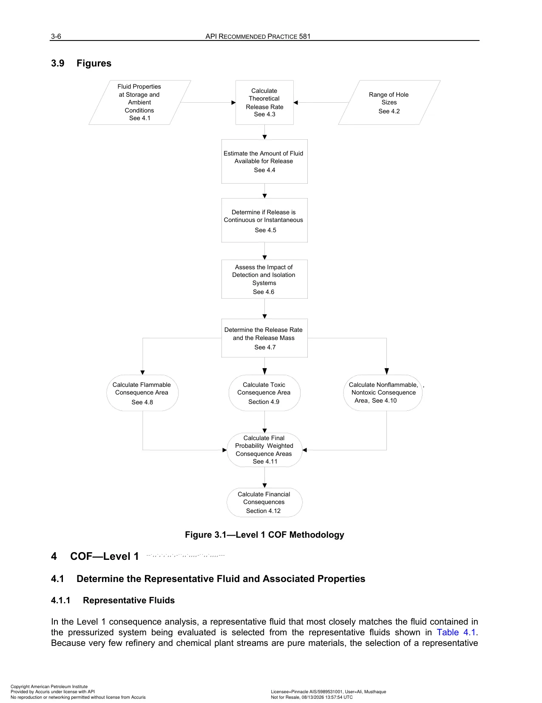
Figure 3.1: Standardized Level 1 consequence workflow: fluid selection from representative fluid groups, determination of operating phase (liquid, vapor, or two-phase flashing), assignment of four standard release hole sizes (small, medium, large, rupture), release rate calculation, inventory limit evaluation, detection and isolation credits, and calculation of flammable and toxic consequence areas.
| Clause / Section & Title | Quantitative Methodology & Governing Equations | Key Engineering Inputs, Limits & Assumptions | Inspection Strategy & Mitigation Actions |
|---|---|---|---|
| 3.3 Release Rate Formulations (Wn) | Theoretical discharge rate through each release hole size n (hole diameter dn): • Liquid Release (Incompressible Bernoulli Flow): Wn = Cd × An × √[ 2 ρl (Ps − Patm) ] • Vapor Release (Compressible Sonic / Choked Flow):Wn = Cd × An × Ps × √[ (k × MW) / (R × T) × (2 / (k + 1))(k+1)/(k−1) ] Where Cd is discharge coefficient (0.62 for orifices, 0.98 for full bore ruptures), An is hole area, and k = Cp / Cv. |
High-pressure gas leaks choke at the orifice throat, limiting maximum release rate to sonic velocity; flashing liquids require two-phase omega-method or homogeneous equilibrium discharge models. | Accurate operating pressure (Ps) and temperature (T) data are paramount; relief valve set points or maximum operating surges must be factored in. |
| 3.4 Inventory Groups & Release Mass Limits | Total mass available for release (massavail) is bounded by the isolated system inventory volume: massavail = min[ masscomp + massinv, Wn × trelease ] Where masscomp is component fluid mass, massinv is additional inventory isolated within the battery limit, and trelease is maximum leak duration (capped at 1 hour or 3 minutes for catastrophic bursts). |
If a unit lacks emergency isolation valves (EIVs), entire unit inventory from connected vessels and drums can flow to the leak point. | Group connected piping circuits and vessels between automated or remote-operated isolation valves into distinct Inventory Groups. |
| 3.5 Detection & Isolation Mitigation Credits | Quantifies the risk reduction provided by fire/gas detection and automated emergency shutdown valves (ESDVs): • System Rating A: Optical flame/gas detectors connected to automated shutdown valves (detection < 1 min, isolation completed within < 5 min, leak duration capped at 5 – 10 min). • System Rating B: Detectors with remote manual ESD valves (detection < 5 min, isolation within < 20 min). • System Rating C: Local manual valves requiring field operator intervention under fire/toxic conditions (leak duration ≥ 60 min). |
High ratings significantly truncate release mass, slashing consequence areas by up to 70%. | Credit can only be claimed if ESD valves and gas detection loops are periodically tested and certified under IEC 61511 / SIL frameworks. |
PART 3 · SEC 3.3
Flammable Event Trees & Fire / Explosion Consequence Areas
When a hydrocarbon stream escapes containment, the ultimate consequence depends on ignition timing and physical dispersion. API RP 581 uses probabilistic event trees to evaluate outcome probabilities and damage areas across four primary combustion scenarios: Pool Fires, Jet Fires, Fireballs, and Vapor Cloud Explosions (VCE).
Figure 3.2 — Level 1 Consequence Release Event Tree Logic for Flammable Fluids
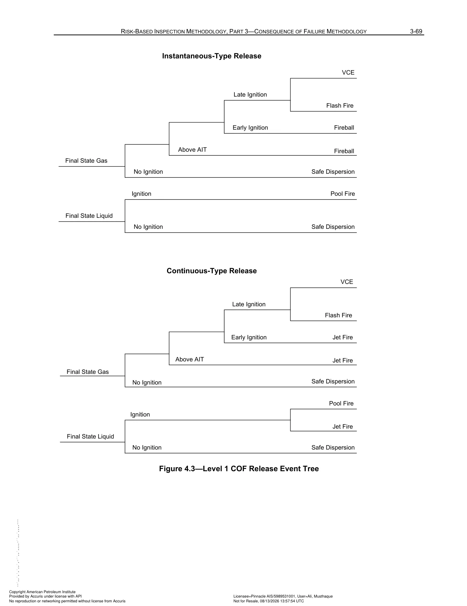
Figure 3.2: Probabilistic event tree defining outcome branches following a hydrocarbon release: prompt ignition vs delayed ignition vs unignited dispersion. Determines final hazardous release physical states including pool fire, jet fire, fireball, and vapor cloud explosion (VCE) based on release rate, ambient temperature relative to auto-ignition temperature (AIT), and inventory mass.
| Clause / Section & Title | Quantitative Methodology & Governing Equations | Key Engineering Inputs, Limits & Assumptions | Inspection Strategy & Mitigation Actions |
|---|---|---|---|
| 3.6 Flammable Release Event Tree Logic | The event tree evaluates sequential probability branches following release: 1. Auto-Ignition: If process temperature T > AIT, probability of immediate auto-ignition is very high (Pauto ≈ 0.8 – 1.0). 2. Early Ignition: If T < AIT, probability of prompt ignition depends on release rate and presence of fixed ignition sources (furnaces, hot work). Produces immediate Jet Fire or Fireball. 3. Delayed Ignition: Vapor cloud disperses into congested structural process modules; delayed spark triggers a violent Vapor Cloud Explosion (VCE). 4. No Ignition: Cloud safely disperses below LEL (zero thermal consequence). |
Instantaneous releases (> 10,000 lb released in < 3 min) transition to BLEVE or large VCEs, while continuous leaks form steady-state jet fires or pool fires. | Relocate ignition sources away from high-volatility process units and maintain strict electrical hazardous area classifications (Class 1, Div 1/2). |
| 3.7 Component Damage & Personnel Injury Areas | • Component Damage Footprint (CAcmd): Area enclosing equipment that would suffer major structural destruction or cascade secondary failures (typically 37.5 kW/m2 thermal radiation or 5.0 psig blast overpressure). • Personnel Injury Footprint (CAinj): Area causing severe burns or fatalities to exposed plant personnel (typically 12.5 kW/m2 thermal flux or 1.0 psig blast overpressure). |
API RP 581 weights personnel safety and equipment damage to calculate the final blended consequence area for matrix categorization. | Define personnel muster points, blast-resistant control rooms, and fireproofing boundaries based on calculated CAcmd and CAinj envelopes. |
PART 3 · SEC 3.4
Toxic Release Modeling & Financial Consequence Evaluation
Toxic releases and financial losses represent critical non-flammable consequence vectors. API RP 581 models downwind plume dispersion for acute toxic chemical releases (H2S, HF, Cl2, NH3) and provides comprehensive financial cost calculations covering physical equipment repair, business interruption, and environmental cleanup.
| Clause / Section & Title | Quantitative Methodology & Governing Equations | Key Engineering Inputs, Limits & Assumptions | Inspection Strategy & Mitigation Actions |
|---|---|---|---|
| 3.8 Toxic Plume Modeling & Exposure Limits | Toxic consequence area (CAtox) is calculated using empirical Gaussian dispersion equations calibrated to Emergency Response Planning Guidelines (ERPG-2) or Acute Exposure Guideline Levels (AEGL-2): • H2S: ERPG-2 = 30 ppm (42 mg/m3) • HF: ERPG-2 = 20 ppm (16.4 mg/m3) • Cl2: ERPG-2 = 3 ppm (8.7 mg/m3) • NH3: ERPG-2 = 150 ppm (105 mg/m3). |
Dense toxic gases (e.g. HF or chlorine) hug low-lying ground and drainage ditches, generating extensive plume footprints extending miles downwind under stable atmospheric conditions (Pasquill-Gifford Class F). | Install water mitigation curtains around HF acid alkylation units to scrub acid vapor plumes; enforce automated personal toxic gas detectors. |
| 3.9 Financial Consequence Breakdown | Total financial loss is modeled across four discrete expenditure accounts: Costtotal = Costequip + Costbi + Costenv + Costinj Where:• Costequip: Capital replacement and repair cost of damaged assets • Costbi: Business Interruption (lost production margin × repair downtime in days) • Costenv: Environmental soil/groundwater remediation and hazardous waste disposal • Costinj: Medical compensation, regulatory fines, and legal liabilities per injury/fatality. |
In modern large-scale refining units, Business Interruption (Costbi) typically dwarfs direct equipment replacement costs by a factor of 10 to 50 (> $500,000 – $1,000,000 per day). | Incorporate spare equipment redundancy and lead-time analysis into RBI financial models to identify single-point-of-failure assets. |
PART 3 · SEC 3.5
Level 2 COF Dispersion & Annex 3.A Storage Tank Consequences
Level 2 Consequence Modeling provides rigorous thermodynamic flash simulations and 3D dense gas dispersion physics for complex multi-component mixtures. Annex 3.A adapts consequence modeling for Atmospheric Storage Tanks (ASTs), addressing floor plate leakage into sub-soil and environmental containment dikes.
Figure 3.3 — Source Term Modeling and Level 2 COF Thermodynamic Flash Analysis
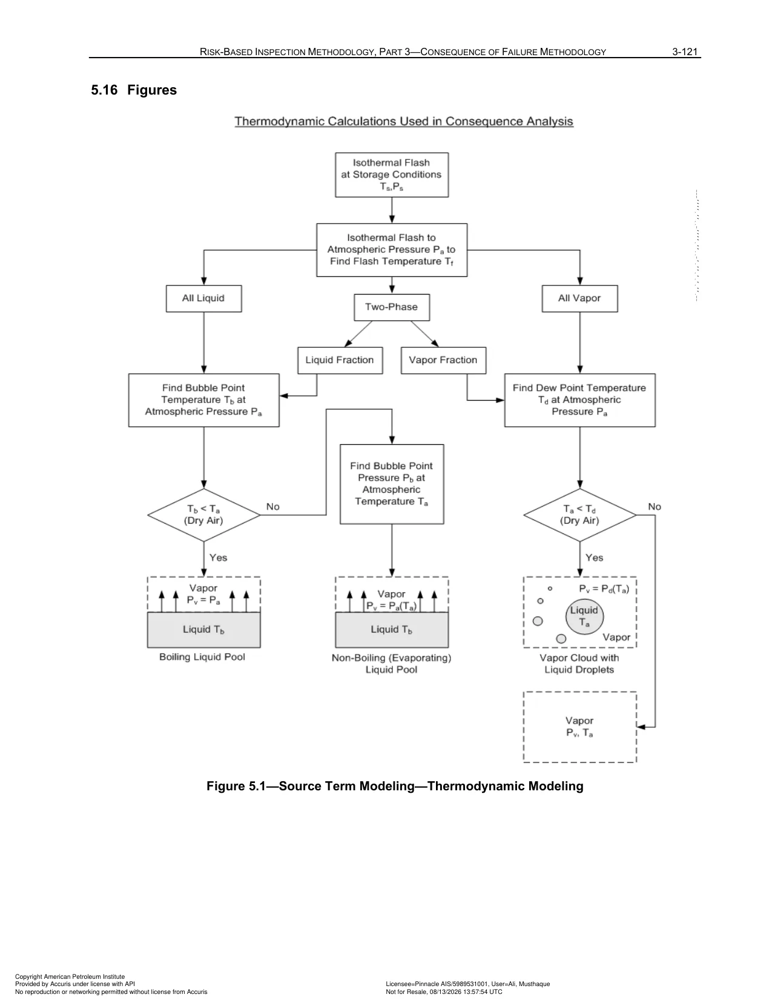
Figure 3.3: Rigorous thermodynamic and fluid dynamics flowchart for Level 2 consequence assessments. Uses multi-component equation of state (Peng-Robinson or SRK) flash algorithms, dense gas atmospheric dispersion modeling, and momentum-dominated jet release physics to calculate precise thermal radiation and blast overpressure footprints.
| Clause / Section & Title | Quantitative Methodology & Governing Equations | Key Engineering Inputs, Limits & Assumptions | Inspection Strategy & Mitigation Actions |
|---|---|---|---|
| 3.10 Level 2 Rigorous Dispersion & VCE Blast Modeling | • Flash Thermodynamics: Peng-Robinson or Soave-Redlich-Kwong (SRK) equations of state solve multi-component phase equilibria, aerosol droplet formation, and liquid rainout. • Atmospheric Boundary Layer Dispersion: Solves 3D conservation equations for mass, momentum, and energy accounting for surface roughness, wind speed, and atmospheric stability. • Vapor Cloud Explosion (VCE): Utilizes the Baker-Strehlow-Tang (BST) or Congestion Assessment Method (CAM) to evaluate flame speed acceleration through process pipe racks, calculating blast overpressures at discrete distances. |
Essential for offshore platforms, densely congested petrochemical modules, or toxic multi-component mixtures where Level 1 assumptions are overly crude. | Apply Level 2 modeling when Level 1 flags an asset in Consequence Category E to refine and optimize capital expenditure decisions. |
| 3.A Storage Tank Bottom & Shell Release Modeling | • Bottom Floor Leakage: Evaluates slow percolation of stored hydrocarbon through tank pad into underlying groundwater aquifers based on soil hydraulic conductivity. • Release Prevention Barrier (RPB) Credit: If an impermeable geomembrane liner or double bottom is installed, sub-soil percolation is eliminated, truncating environmental remediation liabilities by up to 90%. • Dike Overtopping & Pool Fire: Models secondary containment diked area evaporation, vapor dispersion, and full-surface dike pool fire thermal radiation footprints. |
A small 1/4" floor hole running undetected for years can contaminate vast groundwater volumes, resulting in tens of millions of dollars in remediation costs. | Conduct acoustic emission (AE) testing on tank floors while in-service to detect active leaks; verify integrity of leak detection ports between double bottoms. |
PART 4 · SEC 4.1
Risk-Based Inspection Planning, Target Risk & Plan Date Determination
Part 4 provides the operational bridge between quantitative risk calculations and real-world field maintenance execution. It defines the formal algorithms for setting corporate Target Risk thresholds, determining the exact calendar Plan Date where an asset's projected risk intercepts the target, selecting required Inspection Effectiveness levels (A to E), and evaluating the critical decision between internal intrusive entry versus on-stream non-intrusive NDE.
Figure 4.1 — Risk-Based Inspection Planning and Plan Date Determination Flowchart
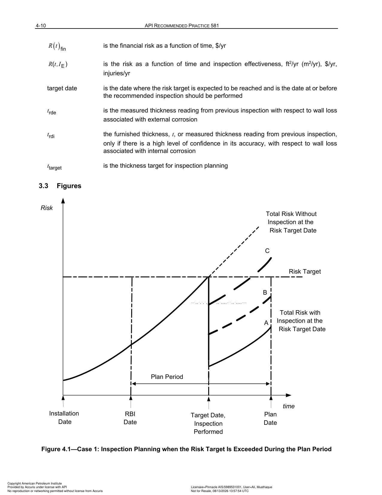
Figure 4.1: Logic for establishing the optimal RBI plan date. Shows how future risk trajectories are projected over time until they intersect the organizational Risk Target (Rtarget). Illustrates the selection of required inspection effectiveness (Levels A to E) and the distinction between internal intrusive and on-stream non-intrusive NDE methods to reduce risk below the target threshold.
| Clause / Section & Title | Quantitative Methodology & Governing Equations | Key Engineering Inputs, Limits & Assumptions | Inspection Strategy & Mitigation Actions |
|---|---|---|---|
| 4.1 Establishing Corporate Risk Targets (Rtarget) | The owner-user must establish an explicit, documented Target Risk criterion representing the maximum acceptable risk threshold for equipment operation: • Area-Based Target Risk: Typically defined as 1.0 × 10−4 ft2/yr (9.29 × 10−6 m2/yr) or calibrated to company safety risk matrices. • Financial Target Risk: Maximum acceptable expected annual economic loss, typically set between $1,000/yr and $10,000/yr per component. • POF-Only Target (Pf,target): In jurisdictions where consequence is fixed or unchangeable, an upper bound on failure probability (e.g. 10−3 or 10−4 failures/yr) is mandated. |
The risk target must comply with jurisdictional safety regulations, corporate safety policies, and local environmental protection acts. | Apply identical risk target thresholds across identical operational units to ensure uniform, unbiased inspection scheduling. |
| 4.2 Plan Date Mathematical Determination | The Plan Date (tplan) is calculated as the precise future operating time where projected risk equals the risk target: R(tplan) = Pf(tplan) × Cf(tplan) = Rtarget Three Operational Cases Occur:• Case 1 (Standard): Risk is currently below target but exceeds it within the multi-year planning horizon (e.g. before the next turnaround). The Plan Date is the date the risk curve intersects the target. • Case 2 (Immediate Exceedance): Current risk already exceeds target. Plan Date is set to current date, requiring immediate inspection, mitigation, or operational derating. • Case 3 (Low Risk Asset): Projected risk does not reach the target within the planning horizon (e.g. within 10 to 20 years). The inspection date defaults to jurisdictional code maximums (e.g. 10-year internal inspection limit in API 510/570). |
Plan dates must never exceed mandatory maximum inspection intervals specified by governing codes (API 510, API 570, API 653, or local jurisdictional statutes) unless specific engineering variance waivers are approved. | Align calculated plan dates with scheduled plant turnaround (TAR) windows. If the plan date falls 6 months before a scheduled TAR, upgrade inspection effectiveness or perform on-stream NDE to safely bridge the gap. |
| 4.3 Inspection Effectiveness Selection (Levels A to E) | Once the target date is reached, an inspection plan must specify the minimum inspection effectiveness level (Level A, B, C, or D) required to reduce the posterior damage factor Df(t) below the allowable limit: Df,allowable = Rtarget / ( gfftotal × FMS × Cf ) The engineer iteratively tests inspection effectiveness options (A through D) in the Bayesian update algorithm until the post-inspection risk curve drops comfortably below Rtarget. |
A low-effectiveness inspection (Level D) may only reduce risk for a few months, whereas a high-effectiveness inspection (Level A) resets statistical uncertainty, providing 5 to 10 years of compliant runtime. | Select the most cost-effective NDE method that provides the minimum required effectiveness tier. |
| 4.4 Intrusive (Internal) vs Non-Intrusive (On-Stream) Inspection Logic | Formal decision criteria governing when internal vessel entry can be replaced with on-stream non-intrusive NDE: • Non-Intrusive Inspection Permitted When: 1. The active damage mechanism is uniform or predictable thinning (not localized, random, or pitting). 2. Proven non-intrusive NDE technologies (automated UT mapping, profile RT, phased array) can access 100% of high-susceptibility zones through vessel walls. 3. Remaining life exceeds 2 years and historical corrosion rate is well-characterized. 4. No evidence of environmental cracking (SCC), HTHA, or liner delamination. • Intrusive (Internal Entry) Mandated When: 1. Damage is localized, pitting, or beneath internal trays/demisters blind to external scanning. 2. Stress corrosion cracking (SCC) or HTHA is active, requiring internal surface WFMT or advanced shear wave NDE. 3. Internal vessel cladding, refractory, or strip lining integrity must be visually confirmed. 4. Component is operating in a new or poorly understood corrosive service. |
Confined space internal entry introduces substantial safety risks (gas hazards, fall hazards) and enormous turnaround downtime costs. Replacing internal entry with non-intrusive UT mapping delivers massive financial savings while maintaining full structural assurance. | Implement on-stream automated ultrasonic thickness mapping (AUT) on clean process vessels to achieve Level A effectiveness without vessel entry. |
| 4.5 Re-assessment Triggers & IOW Integration | The RBI plan is a dynamic model that must be re-evaluated upon specific operational and inspection events: 1. Completion of any major field inspection (measured wall thickness or crack findings must be ingested). 2. Modification of operating process parameters beyond API RP 584 Integrity Operating Windows (IOWs) (e.g. temperature spikes, feedstock changes, acid gas loading increases). 3. Implementation of physical hardware changes via Management of Change (MOC). 4. Expiration of 5-year maximum RBI reassessment intervals per API 580. |
Operating outside established IOW limits can increase corrosion rates by orders of magnitude (e.g. 5x to 50x), invalidating previously calculated plan dates in weeks. | Establish automated digital links between plant historians (SCADA/DCS) and the RBI database to trigger instant reassessments when critical IOW alarms fire. |
PART 5 · SEC 5.1
Pressure Vessels, Process Piping, Deadlegs & Injection Points
Clause 3 of Part 5 provides specialized quantitative guidelines for pressure vessels and complex process piping networks. It addresses high-risk geometric discontinuities, stagnant deadlegs, chemical injection/mixing points, and internal corrosion-resistant alloys (CRA) including weld overlays, explosive cladding, and strip linings.
| Clause / Section & Title | Quantitative Methodology & Governing Equations | Key Engineering Inputs, Limits & Assumptions | Inspection Strategy & Mitigation Actions |
|---|---|---|---|
| 5.3 Piping Circuits, Deadlegs & Stagnant Zones | Piping systems are segmented into discrete Corrosive Piping Circuits sharing uniform metallurgy, process fluid chemistry, and thermodynamic states. Deadlegs and stagnant uninsulated bypass lines are classified as high-risk sub-circuits due to moisture condensation, solids accumulation, and microbiological activity. | Stagnant branches accumulate water and corrosive acidic drops that do not wash away with bulk flow, causing localized pitting rates up to 10× higher than active headers. | Eliminate deadlegs mechanically (shorten to < 3× pipe diameter); perform 100% profile RT or continuous UT scanning on remaining low-point drains and bypass legs. |
| 5.4 Chemical Injection & Mixing Points | Chemical injection points (quench water, neutralizing amines, filming inhibitors, acid feeds) and mixing tees where two streams combine at differing temperatures or compositions represent extreme erosion-corrosion and thermal fatigue risk zones per API 570 Section 5.3. | Impingement of concentrated chemicals or droplet evaporation at injection quills can perforate downstream piping within weeks if quills break or misalign. | Mandate removable injection quills; inspect piping length 12" upstream and 5 pipe diameters (or 10 ft) downstream using ultrasonic corrosion mapping and internal borescopic visual inspection. |
| 5.5 Cladding, Weld Overlays & Strip Linings | Evaluates composite vessel shells featuring carbon steel backing with corrosion-resistant alloy (CRA) liners (e.g. 316L SS, Monel, Inconel 625, Hastelloy, Titanium). POF modeling separates liner degradation from base metal attack. | Liner tears, pinhole weld porosity, or differential thermal expansion stress can allow aggressive process fluid to breach behind the liner, causing rapid, hidden galvanic thinning of the carbon steel pressure shell. | Install external telltale weep holes in vessel shells behind linings and monitor for leaks; perform vacuum box testing, dye penetrant (PT), and acoustic emission (AE) testing during turnarounds. |
PART 5 · SEC 5.2
Atmospheric Storage Tanks (ASTs) & Release Prevention Barriers (RPB)
Clause 4 of Part 5 covers on-grade Atmospheric Storage Tanks constructed per API 650 and inspected per API 653. It delivers rigorous quantitative thinning and risk calculations for bottom floor plates, annular plates, shell courses, and roof structures, incorporating Release Prevention Barriers (RPB) and foundation settlement mechanics.
| Clause / Section & Title | Quantitative Methodology & Governing Equations | Key Engineering Inputs, Limits & Assumptions | Inspection Strategy & Mitigation Actions |
|---|---|---|---|
| 5.6 Storage Tank Bottom Plate Thinning & Remaining Life | Tank bottom failure is modeled via two distinct simultaneous corrosion vectors: 1. Internal Product-Side Corrosion: Thinning caused by settled brine water, microbiological activity (SRB), and acidic sludge. 2. External Soil-Side Corrosion: Thinning driven by pad moisture, soil resistivity, oxygen concentration cells, and lack of cathodic protection. MRT = min[ MRTi, MRTe ] − ( Cri + Cre ) × Δt Where MRT is minimum remaining thickness at next inspection, required to meet the API 653 structural threshold (0.100 in / 2.5 mm for non-lined bottoms, or 0.050 in with thick reinforced linings). |
Bottom plate perforations rarely cause catastrophic burst, but produce massive environmental liabilities through soil and groundwater percolation. | Execute 100% floor scanning with Magnetic Flux Leakage (MFL) supplemented by ultrasonic verification (Level A inspection per Annex 2.F). |
| 5.7 Release Prevention Barriers (RPB) & Foundation Settlement | • Release Prevention Barrier (RPB): An impermeable geomembrane liner or second steel floor installed beneath the storage tank bottom. Captures leaks and routes them to visual detection ports. • Foundation Settlement: Evaluates edge settlement, bottom planar tilt, and localized depressions per API 653 Annex B, which induce high bending stresses in the critical annular plate weld joint. |
The presence of an RPB downgrades environmental consequence categories from Category E to Category B or C, extending the compliant RBI internal inspection interval up to the maximum 20-year limit. | Conduct annual external elevation surveys of the tank foundation ringwall; monitor RPB telltale leak ports weekly. |
PART 5 · SEC 5.3
Heat Exchanger Tube Bundles & Weibull / Weibayes Reliability Modeling
Clause 5 and Annex 5.A provide an advanced statistical reliability framework for shell-and-tube heat exchanger bundles. Rather than relying on simple deterministic corrosion rates, API RP 581 models tube failure probability using a Two-Parameter Weibull Distribution and Weibayes analysis. This supports economic optimization of bundle retubing schedules, bundle cleaning, and plugging limits versus the catastrophic risk of unplanned unit shutdowns.
Figure 5.3 — Heat Exchanger Tube Bundle Weibull and Weibayes Reliability Analysis
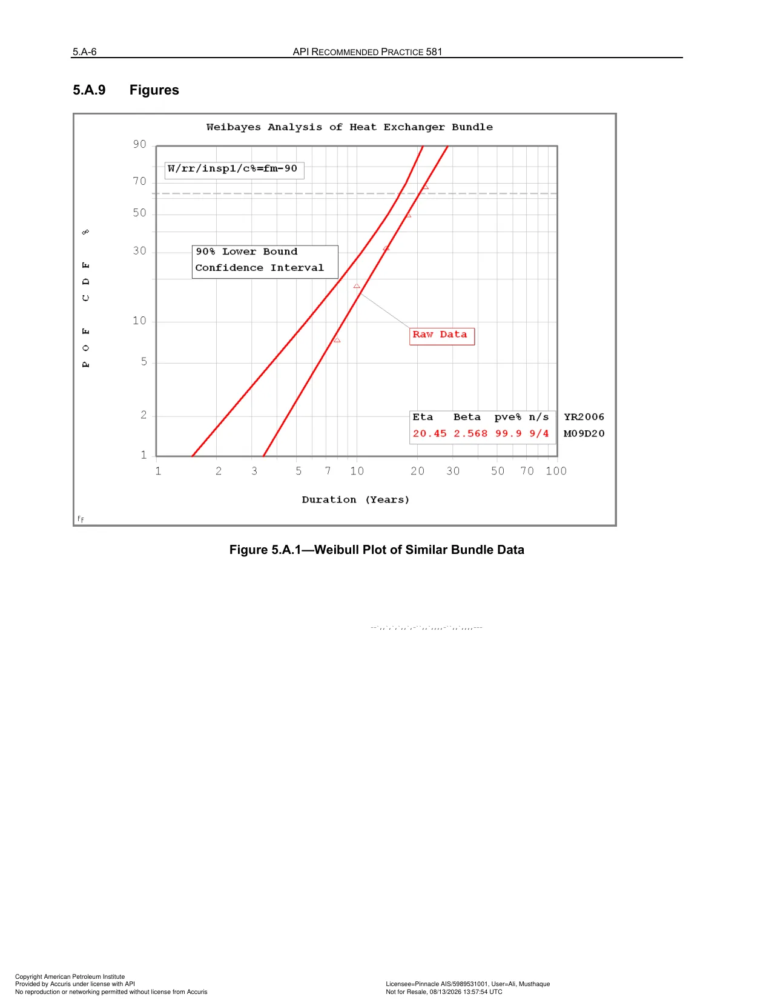
Figure 5.3: Two-parameter Weibull probability plot and Weibayes analysis for heat exchanger tube bundles. Relates operating hours to cumulative failure probability using characteristic life (η) and shape parameter (β). Enables economic optimization of bundle retubing and replacement schedules versus risk of unplanned plant outages.
| Clause / Section & Title | Quantitative Methodology & Governing Equations | Key Engineering Inputs, Limits & Assumptions | Inspection Strategy & Mitigation Actions |
|---|---|---|---|
| 5.8 Bundle Failure Modes & Mechanisms | Evaluates multiple competing degradation vectors across the tube field: • Internal tube-side erosion-corrosion, pitting, and scaling. • External shell-side fluid crossflow impingement at inlet nozzles. • Baffle cut-through wear caused by flow-induced tube vibration. • Tube-to-tubesheet joint roll leakage and cracking. • Thermal fatigue and stress corrosion cracking. |
A single tube rupture can contaminate a high-pressure low-temperature stream or overpressure the shell side, triggering relief valve lifts or unit shutdowns. | Perform internal rotary inspection system (IRIS) or eddy current testing (ECT) during turnaround; enforce maximum tube plugging limit (typically 10% of bundle capacity). |
| 5.9 Two-Parameter Weibull Failure Distribution | Cumulative failure probability of the bundle as a function of operating time t is modeled as: F(t) = 1 − exp[ −( t / η )β ] Where:• β: Weibull Shape Parameter (slope): β < 1.0 indicates infant mortality, β = 1.0 indicates random failures, and β > 1.0 (typically 2.5 to 4.5 for exchanger tubes) indicates wear-out degradation. • η: Characteristic Life (scale parameter): Operating time at which 63.2% of identical bundles would experience tube failure. |
When historical failure data is sparse, Annex 5.A provides a standard Exchanger Bundle Reliability Library defining pre-calculated shape parameters β for common service classes. | Calibrate β and η using the plant's specific bundle maintenance database to model precise failure trajectories. |
| 5.A Weibayes Life Estimation & Economic Retubing Optimization | When a bundle has zero failures but substantial operating hours, Weibayes analysis calculates characteristic life η by fixing β from historical library data: η = [ ∑ tiβ ]1/β Optimal bundle replacement time (treplace) is calculated by balancing planned bundle replacement cost (Costbundle ≈ $50,000 – $200,000) against the expected financial risk of unplanned shutdown (Costunplanned ≈ $1,000,000 – $5,000,000). |
Operating bundles until first failure is economically catastrophic in critical service; planned replacement at 80% of characteristic life minimizes total life-cycle cost. | Retube bundles when cumulative failure probability reaches the economic threshold (F(t) ≈ 0.05 – 0.10). |
PART 5 · SEC 5.4
Pressure Relieving Devices (PRDs) & Overpressure Demand Risk Modeling
Clause 6 and Annex 5.B define the quantitative RBI methodology for Pressure Relieving Devices (PRDs). PRDs are unique passive safety assets whose failure modes are hidden until an emergency demand event occurs. API RP 581 evaluates dual competing failure modes: Fail to Open (FTO), which risks vessel catastrophic overpressure rupture, and Fail to Close (FTC) / Leakage, which causes continuous fugitive emissions, product loss, and flare loading.
Figure 5.1 — Pressure Relieving Device (PRD) RBI Assessment Framework
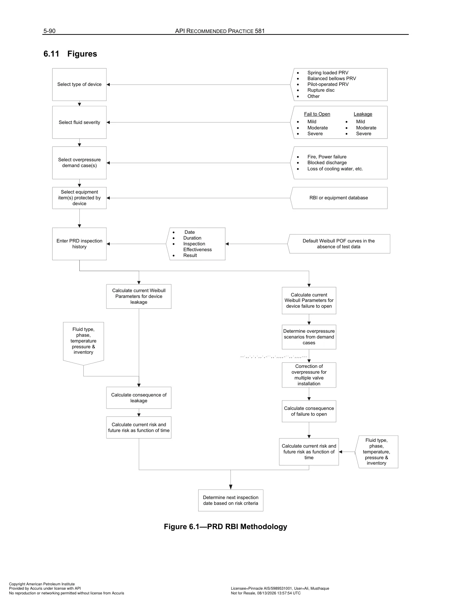
Figure 5.1: Risk analysis workflow for PRDs evaluating dual risk branches: Fail to Open (FTO) leading to overpressure vessel rupture during demand events, and Fail to Close (FTC) leading to seat leakage, fugitive emissions, and environmental releases. Incorporates overpressure demand rate modeling, service severity classification, and Bayesian updating from shop bench pop tests.
| Clause / Section & Title | Quantitative Methodology & Governing Equations | Key Engineering Inputs, Limits & Assumptions | Inspection Strategy & Mitigation Actions |
|---|---|---|---|
| 5.10 PRD Dual Failure Modes: FTO vs FTC | • Fail to Open (FTO): The valve disc sticks shut or set pressure drifts upwards by > 10%. If an overpressure demand occurs while the valve is stuck, the protected vessel experiences catastrophic burst. • Fail to Close (FTC) / PRD Leakage: The valve weeps continuously below set pressure, or chatters and fails to re-seat after opening, releasing toxic or flammable process inventory to the atmosphere or flare system. |
Severe fouling service (coke, polymerizing monomers, heavy waxes) drastically increases FTO probability. | Install rupture pin or rupture disc upstream of relief valves in fouling or corrosive service; monitor pressure between disc and PRD. |
| 5.11 Overpressure Demand Frequency (Dfreq) | Demand rate on the PRD is determined from API Standard 521 relief scenarios: • Blocked discharge / deadheading pumps (10−1 to 10−2 / yr) • Cooling water failure / condenser loss (10−2 / yr) • External pool fire exposure (10−4 to 10−5 / yr) • Heat exchanger tube rupture (10−3 / yr). Roverpressure = Dfreq × PFTO × Cvessel burst |
Overpressure risk is the joint probability of a process demand event occurring while the PRD is simultaneously in a failed-to-open state. | Reduce demand frequency by upgrading distributed control system (DCS) automated interlocks and High Integrity Pressure Protection Systems (HIPPS). |
| 5.B PRD Testing History & Test Interval Optimization | The baseline PRD failure probability is updated via Bayesian analysis using historical shop bench pop-test records: • Passed Clean: Opens within ± 3% of set pressure — decreases posterior failure probability, earning interval extension. • Stuck / Failed to Open: Failed pop test — significantly increases failure probability, penalizing the asset and forcing shorter test intervals. • Service Severity: Classified into Clean/Mild, Moderate, or Severe/Corrosive service classes. |
Traditional prescriptive time-based testing (e.g. fixed 5-year pull intervals) frequently over-inspects clean valves while under-inspecting valves in fouling service. | Establish risk-optimized test intervals up to 10 years for clean dry gas service, while shortening intervals to 2 to 3 years for severe polymerizing or sour services. |
PART 5 · SEC 5.5
Steam System Components & Steam Trap Reliability Modeling
Clause 7 provides quantitative reliability modeling for utility steam systems and steam traps. Steam traps are automatic valves designed to discharge condensed water while preventing live steam escape. Failure of steam traps introduces massive energy inefficiency and poses severe mechanical integrity risks through thermal quenching and catastrophic water hammer shock.
Figure 5.2 — Steam System Component and Steam Trap POF Calculation Framework
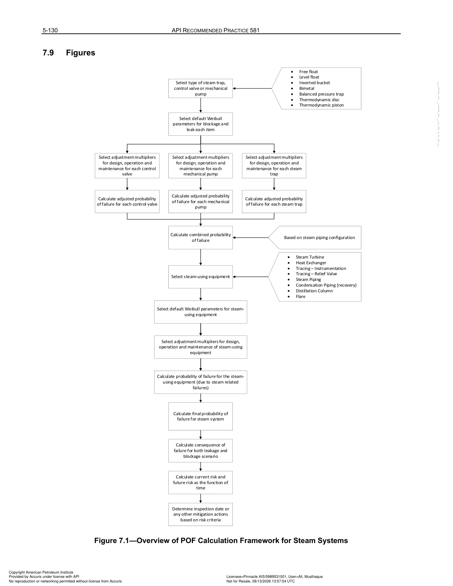
Figure 5.2: Reliability evaluation framework for steam systems. Models two distinct failure modes for steam traps: blow-through (steam loss resulting in major thermal inefficiency and operating cost) and condensate backup (leading to cooling, two-phase slug flow, and catastrophic water hammer rupture of steam mains).
| Clause / Section & Title | Quantitative Methodology & Governing Equations | Key Engineering Inputs, Limits & Assumptions | Inspection Strategy & Mitigation Actions |
|---|---|---|---|
| 5.12 Steam Trap Failure Modes & Mechanics | API RP 581 models two distinct failure modes: 1. Blow-Through (Stuck Open): Live steam escapes continuously into the low-pressure condensate recovery system. A single 1/2" orifice blowing through at 150 psig loses over 350 lb/hr of steam, costing $15,000 – $30,000/yr in wasted boiler fuel. 2. Condensate Backup (Stuck Closed): Condensate fails to drain, backing up into high-pressure steam distribution mains. Cold water forms slugs accelerated by high-velocity steam (> 100 ft/s), producing destructive Water Hammer that shatters pipe elbows, valves, and supports. |
Water hammer in steam systems is a major cause of catastrophic piping rupture and personnel fatalities in petrochemical facilities. | Perform bi-annual acoustic/ultrasonic stethoscope screening and thermographic infrared (IR) temperature surveys across all operating steam traps. |
| 5.13 Risk-Optimized Trap Inspection Programs | Steam trap failure rates follow a predictable Weibull wear-out curve with average service life between 3 and 7 years depending on steam pressure and water chemistry: • High-pressure steam (> 600 psig): Inspected semi-annually (every 6 months). • Medium-pressure steam (150 – 600 psig): Inspected annually. • Low-pressure steam (< 150 psig): Inspected every 2 years. |
Replacing defective blowing or backed-up traps typically yields a payback period of under 30 days in saved utility energy. | Tag traps with high-visibility numeric IDs; log survey acoustic dB readings in the plant maintenance management system (CMMS). |